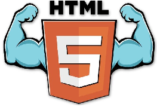

Todo lo que ves en Internet está programado con un código interno, y cuando accedes a una web, a tu navegador le llega este código, y lo traduce de forma visual para que veas lo que el creador de la web ha diseñado que puedas ver. Este código es el que decide la estructura de una página web, colocando sus diferentes elementos en los puntos correspondientes, y un fallo dentro de él hará que no se vea bien. A estos códigos se les llama lenguajes de programación, y el lenguaje que se utiliza en la World Wide Web, el ecosistema de páginas de Internet, es el HTML. Su nombre son las siglas de HyperText Markup Language, que significa literalmente Lenguaje de marcado de hipertexto. Es el estándar con el que están programadas todas las webs, y aunque algunas puedan tener elementos o fragmentos programados en otros lenguajes, siempre tienen que ser "encajados" en el total con este lenguaje. Pero Internet evoluciona, y el contenido que se sube a las webs también cambia con los años, lo que quiere decir que estos lenguajes pueden quedar obsoletos y necesitan ser actualizados. En 1999 se lanzó el estándar HTML4, y como imaginas, las páginas web ahora no tienen nada que ver con lo que eran entonces en cuanto a sus contenidos, y por eso desde hace unos años se está implementando el nuevo estándar HTML5. Por lo tanto, el HTML5 es la última versión del estándar HTML que se utiliza para crear las páginas web que estás visitando, e incorpora algunas novedades interesantes. Una de las notables, es darle cobertura a la reproducción de contenido multimedia, de forma que ya no tengas que ir a recursos de terceros como el obsoleto Flash Player.
